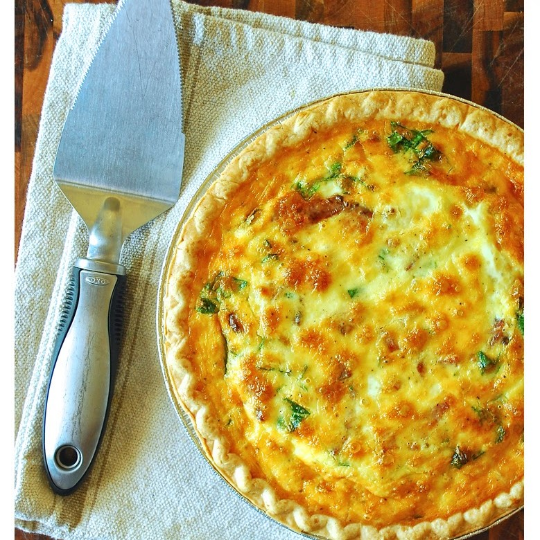

Quiche

Description
This delicious recipe will definitely have you come back for more. Have it for breakfast, lunch, or dinner. This quiche is perfect for any time of the day!
Ingredients
- 1 (9 inch) refrigerated pie crust
- 5 large eggs, beaten
- 1 cup heavy cream
- 1 1/2 cups chopped baby spinach
- 6 strips thick cut bacon, cooked and chopped
- 1 cup shredded cheddar cheese
- 1/2 teaspoon onion powder
- 1/2 teaspoon pepper
- 1/4 teaspoon salt
Directions
- Preheat oven to 375 degrees F.
- Beat eggs with whisk until well blended.
- Add cream, salt, and pepper
- In the bottom of your pie crust layer chopped spinach
- layer chopped cooked bacon
- layer shredded cheddar cheese
- Layer once more, spinach, bacon, and cheese
- Pour egg and cream mixture into the pie crust
- Bake for 35 to 45 minutes until egg mixture is firm and the top is golden
- Cut into wedges and serve warm